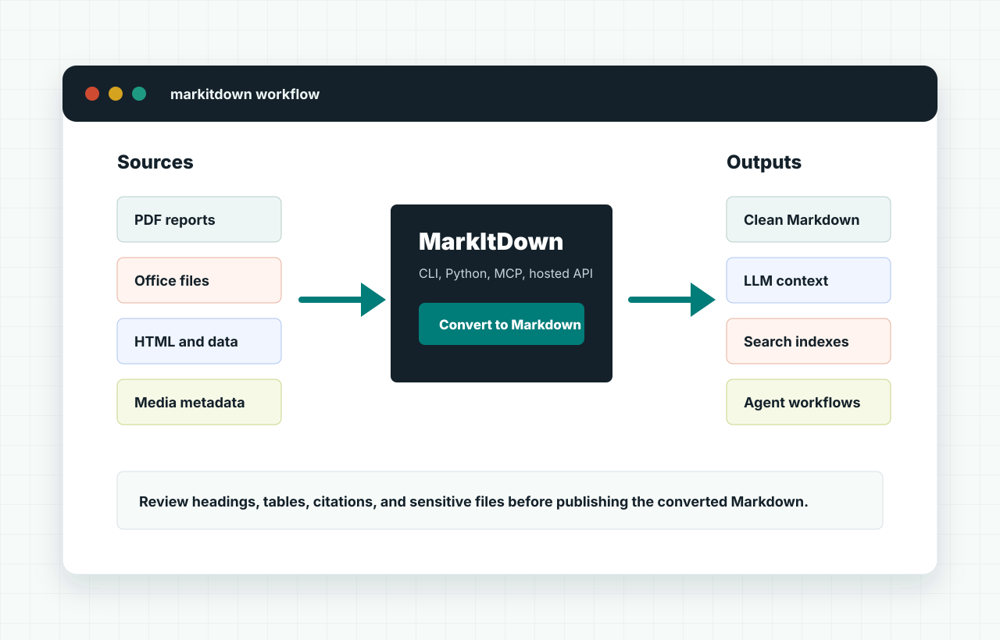

Make source files readable by machines
Use MarkItDown when a PDF, Word file, slide deck, or spreadsheet needs to become inspectable Markdown before it enters an LLM workflow.
MarkItDown turns PDFs, Office documents, HTML, images, audio, structured data, and archives into Markdown that is easier to review, index, search, and send to language models.

The value of MarkItDown is not just conversion. It gives teams a predictable Markdown layer between source files and downstream systems: retrieval pipelines, AI agents, notebooks, documentation, search indexes, changelogs, and review queues.
Use MarkItDown when a PDF, Word file, slide deck, or spreadsheet needs to become inspectable Markdown before it enters an LLM workflow.
A CLI or Python call can turn recurring inbound files into Markdown, then pass the result to indexing, quality checks, or agent tasks.
The hosted workbench at https://markitdown.store/ is useful when a browser, API, or MCP path is simpler than preparing Python first.
Start with the lowest-friction route that still respects your privacy and review needs. Local conversion is strongest for private or repeatable jobs. Hosted conversion is convenient for quick browser work, API access, or shared workflows.
Use this when the source file is already on your machine and you want a direct Markdown result.
python -m pip install "markitdown[all]"
markitdown report.pdf > report.mdUse this when conversion is one step inside a larger workflow that cleans, chunks, or indexes the Markdown.
from markitdown import MarkItDown
md = MarkItDown()
result = md.convert("briefing.docx")
print(result.text_content)Documents, web pages, tables, archives, media, and URLs can need different review steps after conversion.
Run MarkItDown through the CLI, Python package, MCP server, API, Docker flow, or the hosted browser workbench.
Look for broken tables, repeated headers, OCR uncertainty, missing citations, and any content that should stay private.
Most teams end up using both. Local MarkItDown is ideal for controlled pipelines and private batches. A hosted MarkItDown workbench is better when the operator wants browser upload, simple sharing, API credentials, or quick MCP access.
| Route | Best for | What to check |
|---|---|---|
| CLI | One-off local files, shell scripts, batch conversion, reproducible output. | Python version, optional extras, file permissions, and output review. |
| Python API | Applications that need conversion as part of ingestion, cleanup, or indexing. | Error handling, source metadata, large files, and post-conversion validation. |
| MCP | Agent tools that need a document reader callable from an assistant workflow. | Tool permissions, trusted inputs, and whether the agent should read local files. |
| Hosted workbench | Fast browser workflows, shared operators, API access, and setup-free testing. | Upload policy, plan limits, retention expectations, and final Markdown quality. |
Use MarkItDown Online when you want to convert a document in the browser or connect conversion to API and MCP workflows without starting from a local Python environment.
MarkItDown is an open-source Python utility from Microsoft for converting files and URLs into Markdown that is easier for LLMs, search systems, and humans to inspect.
No. It creates a useful Markdown starting point. You should still review important conversions, especially for scanned PDFs, spreadsheets, charts, tables, or documents with repeating headers and footers.
Use the hosted workbench at https://markitdown.store/ when a web interface, API, or MCP route is more convenient than installing local dependencies.
The official Microsoft MarkItDown repository is available on GitHub at github.com/microsoft/markitdown.